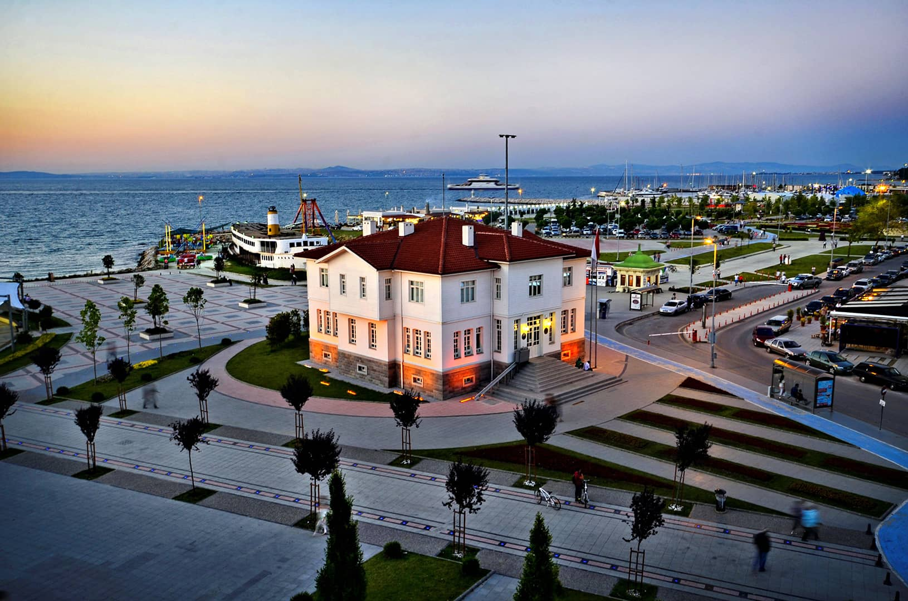

Yalova, Türkiye'nin Yalova ilinin merkezi olan şehirdir. Termal yakınlarındaki Sudüşen Şelalesinde turistler Yalova Armutlu Yarımadasının kuzey kıyısı ile Samanlı Dağlarının kuzey eteklerine kurulmuş olan Yalova, Türkiye'nin kuzeybatısında, Marmara Bölgesinin güneydoğu kesiminde yer almaktadır. İlin kuzeyinde ve batısında Marmara Denizi, doğusunda Kocaeli, güneyinde Bursa (Orhangazi-Gemlik ve İznik ilçeleri) ve Gemlik Körfezi yer almaktadır. Yalova ilinin kuzeyinden güneybatısına kadar olan sınırları Marmara Denizi ile çevrilmiştir. Yalova merkez ilçesi ile bütünleşmiş Çiftlikköy ve Çınarcık ilçeleriyle birlikte 250.000'i aşan merkez nüfusuyla Yalova, Türkiye'nin nüfusu en hızlı artan şehirlerindendir.